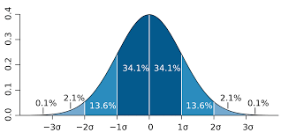

function calc_n_0(z_alpha_sq, S, D) {
return z_alpha_sq * (S**2 / D**2)
}
function effective_sample_size(z_alpha_sq, S, D, N) {
const n_0 = calc_n_0(z_alpha_sq, S, D)
return +(n_0 / (1 + (n_0 / N))).toFixed(1)
}
function ci2z(ci) {
if (ci === ".68") {
return 1
} else if (ci === ".95") {
return 2
} else if (ci === ".99") {
return 3
}
}
viewof conf_int = Inputs.radio([".68", ".95", ".99"], {value: ".95", label: "Conf. interval"})
viewof error_rate = Inputs.range([0.05, 1], {value: 0.1, step: 0.05, label: "Error rate"})
viewof N = Inputs.range([0, 100000], {value: 5000, step: 1000, label: "N"})
viewof prev_mean = Inputs.range([0, 10000], {value: 3000, step: 500, label: "Prev mean"})
viewof prev_std = Inputs.range([0, 10000], {value: 3500, step: 500, label: "Prev std"})
z_alpha_sq = ci2z(conf_int)**2
S = prev_std
D = error_rate * prev_meanCDAE stats
CDAE
Interactive
Statistics is hard. Computational statistics makes it a bit better.
Calculate minimum adequate sample size
The equation:
\[n^* = \frac{n_0}{1 + \frac{n_0}{N}}\]
where \(n_0 = z_\alpha^2 \frac{S^2}{D^2}\), \(S^2\) is our population variance, \(D^2\) is the difference between the true value and the estimated value, and \(z_\alpha^2\) is the \(z\) value at a given confidence interval.1
An example
- We know…
- There are 5,000 nonprofits in the city of reference
- From a previous study, we know that the the mean value of using new tools is $3,000. We also know from previous studies that the s.d. of this is $3,500.
- We want…
- An error rate of 10%
- A confidence interval of 95%
Here, \(S^2\) is the previous standard deviation squared and \(D\) is the wanted error rate times the previous mean, that is, x = .
We find that the minimum adequate sample size, or \(n^*\):
\(n^0\) =
\(n^*\) = / (1 + / ) =
\(n_0/N\) =
Also, we saw in class that \(n^*\) converges around \(600\), with the default parameters. That is, adding more data does not entail a higher \(n^*\). You can observe that fact with the following plot:
But you can play around with other settings to see how it varies.
Power analysis
Footnotes
The mapping for the confidence interval and standard deviation comes from the properties of the normal distribution:

where, for example, \(z_\alpha^2 = z_{.95}^2 = 2^2\) because \(34.1\%*2 + 13.6\%*2 = |2\sigma| \approx 95\%\) of the distribution mass.↩︎